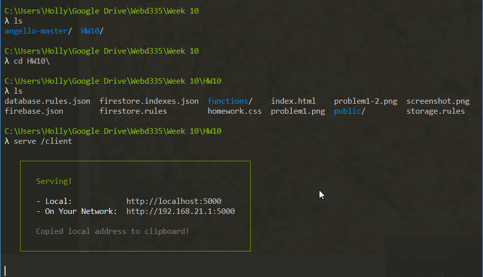

WEBD 335 ― Pete Gordon
Instructions: Follow the instructions below for each Problem (you can write the Javascript in this HTML file directly and return it) and Answer each Question completely (in another document).
[15 points] Setup the Angello App (https://github.com/angularjs-in-action/angello) locally (you can use Firebase as the data store), add two cards to the board with your name on them take a screenshot and submit that as the homework; include in the screen shot the view of the RESULT JSON array of objects and one of the card objects expanded like the following screenshot.
Unable to sign-in and setup cards:

[2 point] What is a module in AngularJS and what is the attribute added to the HTML to declare it?
Source
[2 point] Describe how AngularJS uses ViewModel and why this is different than the way JQuery works?
[2 point] When should an AngularJS Service be used?
[2 point] What are the two common approaches to structuring an AngularJS application? Describe them.
[2 point] Provide an example of a AngularJS declared route configuration with a controller.